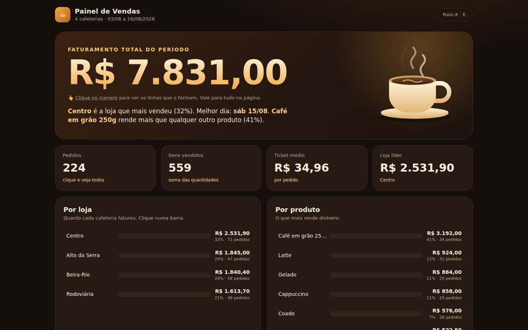
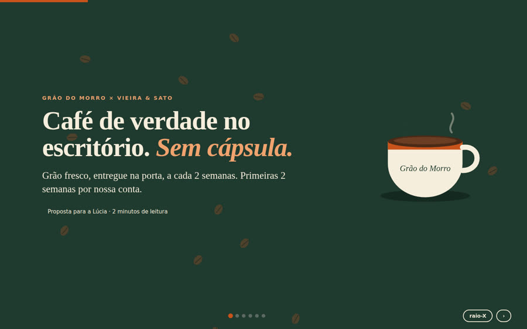

Son siete tareas listas para copiar: una página de ventas, un panel de ventas, una presentación, un explicativo animado, un editor de fotos, un juego 3D y una central de agentes. Cada tarea viene en tres formatos: para un agente que trabaja en una carpeta (Claude Code, Codex, Cursor), para una ventana de chat (Agnes, ChatGPT, Gemini) y como briefing para una persona, sin IA. Sirven para comparar modelos, elegir una herramienta o capacitar a un equipo. El kit incluye los datos, las respuestas correctas y el evaluador por script; para usarlo, solo hay que copiar el texto. Para el evaluador se necesita Python 3.
Qué es
Una prueba, tres formas de aplicarla
El núcleo de la tarea es igual en los tres formatos. Solo cambia lo que la herramienta puede hacer: guardar archivos, responder en un chat o trabajar a mano.
🗂️ Agente con carpeta
Claude Code, Codex, Cursor, Antigravity, Gemini CLI, OpenCode. El agente lee los datos de la carpeta, guarda los archivos y escribe un ENTREGA.md con un resumen de lo que hizo.
💬 Ventana de chat
Agnes, ChatGPT, Gemini, Claude.ai, DeepSeek, Grok, Copilot. Sin carpeta: la respuesta es un único HTML completo y los datos ya vienen incluidos en la tarea.
🧑💼 Sin IA
La misma tarea, presentada como briefing para una persona o equipo, con un tiempo sugerido. Sirve para una clase, seleccionar a un freelancer o comparar personas con máquinas.
🖼️ Imágenes opcionales
Si la herramienta genera imágenes o video (por ejemplo, Higgsfield, Agnes, Codex), puede usarlos. Si no, crea los elementos visuales con código. Ninguna prueba depende de un generador.
🎯 Trampas intencionales
El panel recibe datos sucios a propósito; la presentación incluye anotaciones con un precio que cambió, una suma incorrecta y una cifra prohibida.
📏 Evaluación sin IA
Un script verifica lo que se puede medir (total correcto, cifra prohibida, herramientas presentes) y una ficha de 10 puntos cubre el resto.
Cómo funciona
Preparar, ejecutar, revisar, comparar
Para que la comparación sea justa, cada participante recibe la misma prueba, en el mismo formato y en su propia carpeta.
Elige la prueba→Elige el formato→Copia el prompt→El participante trabaja por su cuenta→kit/avaliar.py→Ficha de 10 puntos
Las 7 pruebas
Elige la prueba y el formato, y copia
Cada tarjeta incluye tres versiones de la misma tarea. En el formato «chat», las pruebas 2 y 3 ya incluyen los datos al final del texto.
1
Página de ventas
Una marca de suscripción de café, desde cero. La IA elige el nombre, los textos y el diseño.
Archivo principal:index.html · Tiempo sugerido (sin IA): 4 h
La parte difícil: Un solo objetivo: que el visitante empiece la prueba gratis. Y un momento que haga que deje de desplazarse.
Para agente con carpeta (Claude Code, Codex, Cursor, Antigravity, Gemini CLI, OpenCode)
# Prueba 1: Página de ventas
Crea una página de ventas para una marca de suscripción de café.
Tú eliges el nombre de la marca, los textos y el diseño. La página tiene un solo objetivo: que el visitante empiece una prueba gratis. Ningún enlace puede sacar a la persona de ese camino.
Crea un momento que haga que la persona deje de desplazarse: una escena (video o animación) controlada por el desplazamiento. Si la página no se desplaza, esa escena abre la página.
Archivo principal: `index.html`. Tiene que abrirse con dos clics.
## Esmero
- Haz que se vea realmente bien: quien pase la vista tiene que detenerse y dejar de desplazarse.
- Usa las herramientas y habilidades que tengas (diseño, animación, generador de imágenes). Tú eliges.
## Imágenes y video (opcional)
- Si tienes conectado un generador de imágenes o de video (por ejemplo: Higgsfield, Agnes, Codex, un modelo local), úsalo: como máximo 8 imágenes y 1 video corto, guardados como archivos en tu carpeta.
- Si no tienes, dibuja todo con código (SVG, CSS, canvas). La prueba vale lo mismo.
- Modo rayos X: la tecla X y un botón pequeño activan los contornos, con un color para cada imagen o video generado y otro para cada animación hecha con código, con una etiqueta pequeña en cada uno.
## Reglas
- Trabaja por tu cuenta. No hagas preguntas. Termina de una vez.
- Trabaja solo dentro de tu carpeta.
- Guarda todo como archivo en la carpeta. No uses archivos de Internet.
- No publiques, no hagas deploy ni subas nada. Nunca reproduzcas sonido.
- Al final, escribe ENTREGA.md en la carpeta: qué hiciste, cómo abrirlo y cada imagen o video generado (archivo, qué muestra, qué herramienta lo creó).
Para ventana de chat (Agnes, ChatGPT, Gemini, Claude.ai, DeepSeek, Grok, Copilot)
# Prueba 1: Página de ventas
Crea una página de ventas para una marca de suscripción de café.
Tú eliges el nombre de la marca, los textos y el diseño. La página tiene un solo objetivo: que el visitante empiece una prueba gratis. Ningún enlace puede sacar a la persona de ese camino.
Crea un momento que haga que la persona deje de desplazarse: una escena (video o animación) controlada por el desplazamiento. Si la página no se desplaza, esa escena abre la página.
Archivo principal: `index.html`. Tiene que abrirse con dos clics.
## Esmero
- Haz que se vea realmente bien: quien pase la vista tiene que detenerse y dejar de desplazarse.
- Usa las herramientas y habilidades que tengas (diseño, animación, generador de imágenes). Tú eliges.
## Imágenes (opcional)
- Si esta interfaz genera imágenes, genera como máximo 4 e indica el nombre de archivo de cada una (img1.jpg, img2.jpg...), para que las guarde junto al HTML. En el HTML, usa <img src="img1.jpg"> y muestra un dibujo en SVG o CSS en su lugar si el archivo no existe, para que la página nunca abra con una imagen rota.
- Si no genera, dibuja todo en SVG o CSS dentro del HTML. La prueba vale lo mismo.
- Modo rayos X: la tecla X y un botón pequeño activan los contornos, con un color para cada imagen y otro para cada animación hecha con código, con una etiqueta pequeña en cada uno.
## Cómo entregar (estás en una ventana de chat, sin carpeta)
- Responde con UN archivo HTML completo en un único bloque de código, desde <!doctype html> hasta </html>, con el CSS y JavaScript dentro.
- El archivo tiene que estar completo. Nada de "el resto sigue igual".
- No uses archivos de Internet. Nunca reproduzcas sonido.
- No hagas preguntas. Termina de una vez.
- Después del bloque, en hasta 5 líneas: qué hiciste y cómo abrirlo.
Sin IA: briefing para una persona o un equipo
# Prueba 1: Página de ventas
**Tiempo sugerido:** 4 h · **Perfil:** diseñador web o front-end (el archivo final es HTML)
Crea una página de ventas para una marca de suscripción de café.
Tú eliges el nombre de la marca, los textos y el diseño. La página tiene un solo objetivo: que el visitante empiece una prueba gratis. Ningún enlace puede sacar a la persona de ese camino.
Crea un momento que haga que la persona deje de desplazarse: una escena (video o animación) controlada por el desplazamiento. Si la página no se desplaza, esa escena abre la página.
Archivo principal: `index.html`. Tiene que abrirse con dos clics.
## Esmero
- Haz que se vea realmente bien: quien pase la vista tiene que detenerse y dejar de desplazarse.
- Puedes usar lo que quieras: programa de diseño, código, banco de imágenes o ilustración propia.
## Imágenes y video
- Usa imágenes de donde quieras (tuyas, de un banco gratuito o generadas) y anota el origen de cada una en ENTREGA.md.
- Modo rayos X (opcional para una persona, punto extra): la tecla X y un botón pequeño activan los contornos, con un color para cada imagen o video y otro para cada animación hecha con código, con una etiqueta pequeña en cada uno.
## Cómo entregar
- Puedes usar cualquier herramienta, incluso ninguna IA. Al final, indica cuáles usaste.
- Entrega la carpeta con el archivo principal y un ENTREGA.md: qué hiciste, cómo abrirlo y de dónde salió cada imagen.
- No publiques nada en Internet. Sin sonido.
- Si surge una duda durante el trabajo: decide y anota la decisión en ENTREGA.md (la prueba también evalúa esto).
## Cómo se evaluará
Ficha de 10 puntos (avaliar/ficha.es.md): funciona, la parte difícil, esmero, honestidad y reglas.
2
Panel de ventas
90 días de ventas de 4 cafeterías se convierten en un panel que la dueña entiende en 5 segundos.
Archivo principal:painel.html · Tiempo sugerido (sin IA): 4 h
La parte difícil: Los datos están sucios a propósito. Hay que limpiarlos, mostrar qué se corrigió y permitir hacer clic en una cifra para ver las filas que la componen.
Para agente con carpeta (Claude Code, Codex, Cursor, Antigravity, Gemini CLI, OpenCode)
# Prueba 2: Panel de ventas
Crea un panel de ventas para la dueña de una pequeña cadena de 4 cafeterías.
Los datos están en `vendas.csv`: los pedidos del período. El archivo está sucio a propósito. Primero límpialo y muestra qué corregiste (qué tipo de problema y cuántas filas de cada uno). Muestra la facturación total del período.
La dueña tiene que ver lo que importa en 5 segundos y poder hacer clic en una cifra para ver las filas que la componen.
Archivo principal: `painel.html`. Tiene que abrirse con dos clics, así que los datos limpios van dentro del propio HTML.
## Esmero
- Haz que se vea realmente bien: quien pase la vista tiene que detenerse y dejar de desplazarse.
- Usa las herramientas y habilidades que tengas (diseño, animación, generador de imágenes). Tú eliges.
## Imágenes y video (opcional)
- Si tienes conectado un generador de imágenes o de video (por ejemplo: Higgsfield, Agnes, Codex, un modelo local), úsalo: como máximo 8 imágenes y 1 video corto, guardados como archivos en tu carpeta.
- Si no tienes, dibuja todo con código (SVG, CSS, canvas). La prueba vale lo mismo.
- Modo rayos X: la tecla X y un botón pequeño activan los contornos, con un color para cada imagen o video generado y otro para cada animación hecha con código, con una etiqueta pequeña en cada uno.
## Reglas
- Trabaja por tu cuenta. No hagas preguntas. Termina de una vez.
- Trabaja solo dentro de tu carpeta.
- Guarda todo como archivo en la carpeta. No uses archivos de Internet.
- No publiques, no hagas deploy ni subas nada. Nunca reproduzcas sonido.
- Al final, escribe ENTREGA.md en la carpeta: qué hiciste, cómo abrirlo y cada imagen o video generado (archivo, qué muestra, qué herramienta lo creó).
Para ventana de chat (Agnes, ChatGPT, Gemini, Claude.ai, DeepSeek, Grok, Copilot)
# Prueba 2: Panel de ventas
Crea un panel de ventas para la dueña de una pequeña cadena de 4 cafeterías.
Los datos están en `vendas-mini.csv`: los pedidos del período. El archivo está sucio a propósito. Primero límpialo y muestra qué corregiste (qué tipo de problema y cuántas filas de cada uno). Muestra la facturación total del período.
La dueña tiene que ver lo que importa en 5 segundos y poder hacer clic en una cifra para ver las filas que la componen.
Archivo principal: `painel.html`. Tiene que abrirse con dos clics, así que los datos limpios van dentro del propio HTML.
## Esmero
- Haz que se vea realmente bien: quien pase la vista tiene que detenerse y dejar de desplazarse.
- Usa las herramientas y habilidades que tengas (diseño, animación, generador de imágenes). Tú eliges.
## Imágenes (opcional)
- Si esta interfaz genera imágenes, genera como máximo 4 e indica el nombre de archivo de cada una (img1.jpg, img2.jpg...), para que las guarde junto al HTML. En el HTML, usa <img src="img1.jpg"> y muestra un dibujo en SVG o CSS en su lugar si el archivo no existe, para que la página nunca abra con una imagen rota.
- Si no genera, dibuja todo en SVG o CSS dentro del HTML. La prueba vale lo mismo.
- Modo rayos X: la tecla X y un botón pequeño activan los contornos, con un color para cada imagen y otro para cada animación hecha con código, con una etiqueta pequeña en cada uno.
## Cómo entregar (estás en una ventana de chat, sin carpeta)
- Responde con UN archivo HTML completo en un único bloque de código, desde <!doctype html> hasta </html>, con el CSS y JavaScript dentro.
- El archivo tiene que estar completo. Nada de "el resto sigue igual".
- No uses archivos de Internet. Nunca reproduzcas sonido.
- No hagas preguntas. Termina de una vez.
- Después del bloque, en hasta 5 líneas: qué hiciste y cómo abrirlo.
Los datos están abajo, entre las líneas ===. Coloca los datos DENTRO del HTML.
=== vendas-mini.csv ===
pedido,data,loja,produto,qtd,preco,pagamento
50053,2026-08-06,Beira-Rio,Gelado,4,13.50,cartao
50082,2026-08-08,Centro,Café em grão 250g,1,39.90,pix
50193,2026-08-15,Centro,Espresso,1,6.50,pix
50042,2026-08-05,Rodoviária,Bolo de fubá,4,9.50,cartao
50039,2026-08-05,Beira-Rio,Coado,2,8.00,pix
50177,2026-08-14,Centro,Gelado,4,13.50,pix
50130,2026-08-10,Alto da Serra,Gelado,4,13.50,dinheiro
50070,2026-08-07,Beira-Rio,Café em grão 250g,4,39.90,pix
50188,2026-08-14,Alto da Serra,Coado,1,8.00,pix
50187,2026-08-14,Alto da Serra,Gelado,3,13.50,cartao
50119,2026-08-10,Centro,Cappuccino,3,11.00,pix
50020,2026-08-04,Beira-Rio,Latte,2,12.00,pix
50207,2026-08-15,Alto da Serra,Latte,1,12.00,pix
50114,2026-08-09,Alto da Serra,Gelado,4,13.50,dinheiro
50146,2026-08-11,Alto da Serra,Pão de queijo,2,7.00,cartao
50201,2026-08-15,Rodoviária,Cappuccino,3,11.00,pix
50021,2026-08-04,Beira-Rio,Cappuccino,4,R$ 11.00,dinheiro
50169,2026-08-13,Rodoviária,Cappuccino,2,11.00,cartao
50026,2026-08-04,RODOVIÁRIA,Latte,3,12.00,cartao
50091,2026-08-08,Rodoviária,Gelado,2,13.50,dinheiro
50139,2026-08-11,Rodoviária,Café em grão 250g,1,39.90,cartao
50058,2026-08-06,Rodoviária,Espresso,1,R$ 6.50,pix
50190,2026-08-15,Centro,Café em grão 250g,2,39.90,dinheiro
50135,2026-08-11,Centro,Pão de queijo,1,7.00,cartao
50154,2026-08-12,Beira-Rio,Pão de queijo,1,7.00,dinheiro
50079,2026-08-08,Centro,Espresso,3,6.50,cartao
50045,2026-08-05,Alto da Serra,Bolo de fubá,2,9.50,dinheiro
50129,10/08/2026,Alto da Serra,Bolo de fubá,2,9.50,cartao
50024,2026-08-04,Rodoviária,Gelado,1,13.50,pix
50141,2026-08-11,Rodoviária,Gelado,4,13.50,pix
50003,2026-08-03,Centro,Latte,4,12.00,pix
50199,2026-08-15,Beira-Rio,Pão de queijo,2,7.00,cartao
50223,16/08/2026,Alto da Serra,Espresso,1,6.50,cartao
50075,2026-08-07,Alto da Serra,Espresso,3,6.50,cartao
50069,2026-08-07,Beira-Rio,Gelado,4,13.50,dinheiro
50146,2026-08-11,Alto da Serra,Pão de queijo,2,7.00,cartao
50106,2026-08-09,Rodoviária,Gelado,2,13.50,pix
50208,2026-08-15,Alto da Serra,Coado,3,8.00,pix
50049,2026-08-06,Centro,Cappuccino,3,11.00,cartao
50209,2026-08-16,Centro,Coado,2,8.00,cartao
50087,2026-08-08,Beira-Rio,Espresso,3,6.50,pix
50124,2026-08-10,Rodoviária,Gelado,2,13.50,cartao
50076,7 ago 2026,Alto da Serra,Latte,2,12.00,pix
50040,2026-08-05,Beira-Rio,Café em grão 250g,3,39.90,cartao
50145,2026-08-11,Alto da Serra,Café em grão 250g,3,39.90,pix
50066,2026-08-07,Centro,Pão de queijo,2,7.00,cartao
50183,14 ago 2026,Beira-Rio,Bolo de fubá,4,9.50,pix
50152,2026-08-12,Beira-Rio,Coado,1,8.00,pix
50035,2026-08-05,Centro,Bolo de fubá,3,9.50,dinheiro
50222,2026-08-16,Alto da Serra,Gelado,1,13.50,cartao
50140,2026-08-11,Rodoviária,Coado,3,8.00,pix
50057,2026-08-06,Rodoviária,Latte,2,12.00,pix
50068,2026-08-07,Beira-Rio,Latte,3,12.00,dinheiro
50097,2026-08-09,Centro,Latte,1,12.00,pix
50174,2026-08-13,Alto da Serra,Café em grão 250g,4,39.90,pix
50088,08/08/2026,Beira-Rio,Coado,3,8.00,pix
50202,2026-08-15,Rodoviária,Espresso,1,6.50,cartao
50148,2026-08-12,Centro,Gelado,3,13.50,pix
50110,2026-08-09,Rodoviária,Coado,1,8.00,pix
50162,2026-08-13,Centro,Cappuccino,3,11.00,pix
50134,2026-08-11,Centro,Pão de queijo,4,7.00,cartao
50204,2026-08-15,Alto da Serra,Café em grão 250g,1,39.90,cartao
50072,2026-08-07,Rodoviária,Latte,2,12.00,pix
50167,13/08/2026,Beira-Rio,Café em grão 250g,1,39.90,pix
50203,2026-08-15,Rodoviária,Latte,4,12.00,pix
50016,2026-08-04,Centro,Bolo de fubá,3,9.50,pix
50136,2026-08-11,Beira-Rio,Latte,2,12.00,pix
50173,2026-08-13,Alto da Serra,Café em grão 250g,1,39.90,dinheiro
50021,2026-08-04,Beira-Rio,Cappuccino,4,R$ 11.00,dinheiro
50150,2026-08-12,Centro,Gelado,2,R$ 13.50,cartao
50090,2026-08-08,Rodoviária,Pão de queijo,4,7.00,pix
50116,2026-08-10,Centro,Espresso,1,6.50,cartao
50120,2026-08-10,Beira-Rio,Pão de queijo,3,7.00,cartao
50093,2026-08-08,Alto da Serra,Pão de queijo,4,7.00,pix
50115,2026-08-10,Centro,Pão de queijo,3,7.00,pix
50103,2026-08-09,Beira-Rio,Café em grão 250g,2,39.90,cartao
50191,15 ago 2026,Centro,Bolo de fubá,4,9.50,cartao
50099,2026-08-09,Centro,Latte,3,12.00,cartao
50019,4 ago 2026,Centro,Gelado,2,13.50,pix
50031,2026-08-05,Centro,Pão de queijo,3,7.00,pix
50107,2026-08-09,Rodoviária,Coado,4,8.00,pix
50059,2026-08-06,Rodoviária,Bolo de fubá,3,9.50,cartao
50161,2026-08-13,Centro,Pão de queijo,4,7.00,pix
50175,2026-08-13,Alto da Serra,Espresso,3,6.50,pix
50019,4 ago 2026,Centro,Gelado,2,13.50,pix
50164,13 ago 2026,Centro,Café em grão 250g,1,39.90,cartao
50176,2026-08-14,Centro,Coado,4,8.00,pix
50008,3 ago 2026,Beira-Rio,Bolo de fubá,1,9.50,cartao
50221,16 ago 2026,Rodoviária,Latte,4,12.00,pix
50143,2026-08-11,Rodoviária,Coado,4,8.00,pix
50085,2026-08-08,Beira-Rio,Latte,1,12.00,cartao
50030,2026-08-04,Alto da Serra,Gelado,2,R$ 13.50,pix
50216,16/08/2026,Beira-Rio,Espresso,4,6.50,cartao
50013,2026-08-03,Alto da Serra,Latte,1,12.00,pix
50073,2026-08-07,Rodoviária,Café em grão 250g,4,39.90,cartao
50038,2026-08-05,Beira-Rio,Cappuccino,4,11.00,pix
50215,2026-08-16,Beira-Rio,Café em grão 250g,1,39.90,dinheiro
50017,2026-08-04,Centro,Cappuccino,4,11.00,pix
50163,2026-08-13,Centro,Espresso,3,6.50,cartao
50056,2026-08-06,Beira-Rio,Latte,2,12.00,pix
50184,14 ago 2026,Beira-Rio,Pão de queijo,4,7.00,pix
50213,2026-08-16,Centro,Gelado,3,13.50,cartao
50012,2026-08-03,Alto da Serra,Coado,1,8.00,pix
50077,2026-08-07,Alto da Serra,Pão de queijo,1,7.00,cartao
50158,2026-08-12,Alto da Serra,Latte,3,12.00,pix
50065,2026-08-07,Centro,Espresso,3,6.50,cartao
50100,09/08/2026,Centro,Café em grão 250g,4,39.90,pix
50027,2026-08-04,Rodoviária,Cappuccino,1,11.00,cartao
50205,15/08/2026,Alto da Serra,Pão de queijo,1,7.00,cartao
50029,2026-08-04,Alto da Serra,Pão de queijo,4,7.00,pix
50197,2026-08-15,beira-rio ,Café em grão 250g,1,39.90,pix
50004,2026-08-03,Centro,Bolo de fubá,2,9.50,dinheiro
50206,2026-08-15,ALTO DA SERRA,Café em grão 250g,2,39.90,pix
50149,2026-08-12,Centro,Latte,4,12.00,pix
50125,2026-08-10,Rodoviária,Latte,1,12.00,pix
50032,2026-08-05,Centro,Bolo de fubá,4,9.50,pix
50048,2026-08-05,Alto da Serra,Cappuccino,4,11.00,cartao
50054,2026-08-06,Beira-Rio,Latte,3,12.00,cartao
50217,2026-08-16,Beira-Rio,Gelado,4,13.50,pix
50198,2026-08-15,Beira-Rio,Latte,3,12.00,pix
50081,2026-08-08,Centro,Cappuccino,2,11.00,cartao
50007,2026-08-03,Beira-Rio,Coado,3,"8,00",cartao
50179,2026-08-14,Centro,Gelado,1,13.50,cartao
50144,2026-08-11,Alto da Serra,Espresso,4,6.50,cartao
50015,2026-08-04,centro ,Pão de queijo,1,7.00,cartao
50078,2026-08-08,Centro,Bolo de fubá,1,9.50,cartao
50014,2026-08-03,Alto da Serra,Café em grão 250g,4,39.90,pix
50156,2026-08-12,Rodoviária,Cappuccino,4,11.00,cartao
50211,2026-08-16,Centro,Bolo de fubá,2,9.50,pix
50155,2026-08-12,Rodoviária,Latte,2,12.00,dinheiro
50055,2026-08-06,Beira-Rio,Cappuccino,1,11.00,cartao
50101,2026-08-09,Centro,Latte,1,12.00,pix
50127,2026-08-10,Rodoviária,Gelado,2,13.50,cartao
50192,2026-08-15,Centro,Cappuccino,4,11.00,pix
50047,2026-08-05,Alto da Serra,Bolo de fubá,1,9.50,cartao
50165,2026-08-13,centro ,Latte,4,"12,00",pix
50123,2026-08-10,Beira-Rio,Coado,1,8.00,cartao
50098,2026-08-09,Centro,Espresso,4,6.50,cartao
50180,2026-08-14,Centro,Café em grão 250g,4,39.90,pix
50157,2026-08-12,Alto da Serra,Cappuccino,2,11.00,cartao
50166,13 ago 2026,Beira-Rio,Bolo de fubá,4,9.50,pix
50122,2026-08-10,Beira-Rio,Café em grão 250g,1,39.90,pix
50102,2026-08-09,Beira-Rio,Pão de queijo,1,7.00,cartao
50214,2026-08-16,Centro,Espresso,1,6.50,pix
50171,2026-08-13,Rodoviária,Coado,1,8.00,pix
50151,2026-08-12,Centro,Cappuccino,3,11.00,cartao
50117,2026-08-10,Centro,Gelado,2,13.50,pix
50147,2026-08-12,Centro,Espresso,1,6.50,pix
50109,2026-08-09,Rodoviária,Café em grão 250g,4,39.90,pix
50050,2026-08-06,Centro,Cappuccino,2,11.00,pix
50159,2026-08-12,Alto da Serra,Café em grão 250g,2,39.90,pix
50025,2026-08-04,Rodoviária,Coado,1,8.00,pix
50064,2026-08-07,Centro,Café em grão 250g,2,39.90,pix
50033,05/08/2026,Centro,Café em grão 250g,1,39.90,cartao
50006,03/08/2026,Beira-Rio,Espresso,4,6.50,pix
50172,2026-08-13,Rodoviária,Coado,4,8.00,pix
50060,2026-08-06,Rodoviária,Espresso,4,6.50,cartao
50108,2026-08-09,Rodoviária,Coado,4,8.00,cartao
50185,2026-08-14,Rodoviária,Espresso,4,6.50,cartao
50212,2026-08-16,Centro,Latte,1,12.00,cartao
50210,2026-08-16,Centro,Espresso,1,R$ 6.50,pix
50132,2026-08-11,Centro,Café em grão 250g,3,39.90,dinheiro
50126,2026-08-10,Rodoviária,Cappuccino,3,11.00,pix
50061,2026-08-06,Alto da Serra,Latte,1,12.00,pix
50133,2026-08-11,Centro,Espresso,1,6.50,dinheiro
50044,2026-08-05,Rodoviária,Coado,2,8.00,cartao
50080,2026-08-08,Centro,Café em grão 250g,4,39.90,dinheiro
50112,2026-08-09,Alto da Serra,Pão de queijo,3,7.00,pix
50018,2026-08-04,Centro,Pão de queijo,3,7.00,dinheiro
50118,2026-08-10,Centro,Cappuccino,4,11.00,pix
50002,2026-08-03,Centro,Cappuccino,3,11.00,pix
50131,2026-08-11,Centro,Cappuccino,1,11.00,cartao
50195,2026-08-15,Beira-Rio,Pão de queijo,3,7.00,cartao
50052,2026-08-06,Centro,Gelado,1,13.50,cartao
50168,2026-08-13,Beira-Rio,Coado,4,"8,00",pix
50096,2026-08-09,Centro,Cappuccino,1,11.00,cartao
50063,2026-08-07,Centro,Latte,1,12.00,cartao
50005,2026-08-03,Beira-Rio,Cappuccino,4,11.00,pix
50092,2026-08-08,Rodoviária,Coado,2,8.00,cartao
50051,2026-08-06,Centro,Bolo de fubá,4,9.50,pix
50001,2026-08-03,Centro,Espresso,3,6.50,cartao
50128,2026-08-10,Alto da Serra,Café em grão 250g,2,39.90,cartao
50160,2026-08-12,Alto da Serra,Café em grão 250g,2,39.90,cartao
50218,2026-08-16,Beira-Rio,Pão de queijo,2,7.00,pix
50170,2026-08-13,Rodoviária,Cappuccino,2,11.00,pix
50104,2026-08-09, Beira-Rio,Espresso,4,6.50,pix
50037,2026-08-05,Beira-Rio,Bolo de fubá,1,9.50,pix
50009,2026-08-03,Rodoviária,Gelado,1,13.50,cartao
50062,2026-08-06,Alto da Serra,Bolo de fubá,3,9.50,dinheiro
50224,16 ago 2026,Alto da Serra,Espresso,2,6.50,pix
50022,2026-08-04,Beira-Rio,Cappuccino,3,11.00,pix
50084,2026-08-08,Beira-Rio,Cappuccino,2,11.00,cartao
50113,2026-08-09,Alto da Serra,Espresso,3,6.50,cartao
50121,2026-08-10,Beira-Rio,Bolo de fubá,1,9.50,cartao
50042,2026-08-05,Rodoviária,Bolo de fubá,4,9.50,cartao
50036,2026-08-05,Beira-Rio,Café em grão 250g,2,39.90,pix
50219,2026-08-16,Rodoviária,Latte,2,12.00,cartao
50023,2026-08-04,Beira-Rio,Coado,1,8.00,pix
50041,2026-08-05,Beira-Rio,Café em grão 250g,1,39.90,cartao
50083,2026-08-08,Centro,Pão de queijo,1,7.00,cartao
50095,2026-08-08,Alto da Serra,Gelado,2,13.50,pix
50187,2026-08-14,Alto da Serra,Gelado,3,13.50,cartao
50105,2026-08-09,Beira-Rio,Coado,4,8.00,cartao
50220,2026-08-16,Rodoviária,Latte,3,12.00,cartao
50153,2026-08-12,Beira-Rio,Bolo de fubá,2,9.50,cartao
50142,2026-08-11,Rodoviária,Coado,3,8.00,cartao
50194,2026-08-15,Centro,Cappuccino,2,11.00,cartao
50034,2026-08-05,Centro,Pão de queijo,3,7.00,pix
50067,2026-08-07,Beira-Rio,Coado,4,8.00,cartao
50178,2026-08-14,Centro,Gelado,4,"13,50",cartao
50186,2026-08-14,Alto da Serra,Latte,4,12.00,cartao
50189,2026-08-15,Centro,Café em grão 250g,4,39.90,pix
50028,2026-08-04,Alto da Serra,Café em grão 250g,4,39.90,cartao
50137,2026-08-11,Beira-Rio,Espresso,1,6.50,dinheiro
50071,2026-08-07,beira-rio ,Espresso,4,6.50,cartao
50138,2026-08-11,Beira-Rio,Cappuccino,2,11.00,dinheiro
50181,14/08/2026, Beira-Rio,Coado,3,8.00,pix
50043,2026-08-05,Rodoviária,Latte,4,12.00,cartao
50182,2026-08-14,Beira-Rio,Espresso,1,6.50,dinheiro
50196,2026-08-15,Beira-Rio,Espresso,4,6.50,pix
50010,2026-08-03,Rodoviária,Café em grão 250g,1,39.90,pix
50111,2026-08-09,Alto da Serra,Bolo de fubá,1,9.50,dinheiro
50074,2026-08-07,Alto da Serra,Coado,4,8.00,dinheiro
50086,2026-08-08,Beira-Rio,Cappuccino,2,11.00,pix
50089,2026-08-08,Rodoviária,Coado,2,8.00,dinheiro
50094,2026-08-08,Alto da Serra,Bolo de fubá,2,9.50,pix
50046,2026-08-05,Alto da Serra,Latte,3,12.00,cartao
50011,2026-08-03,Rodoviária,Bolo de fubá,1,9.50,cartao
50200,2026-08-15,Rodoviária,Café em grão 250g,3,39.90,cartao
90002,2026-08-06,Centro,TESTE - NAO CONTAR,99,1.00,pix
90001,2026-10-26,Centro,TESTE - NAO CONTAR,99,1.00,pix
=== fin ===
Sin IA: briefing para una persona o un equipo
# Prueba 2: Panel de ventas
**Tiempo sugerido:** 4 h · **Perfil:** analista de datos con HTML, o front-end
Crea un panel de ventas para la dueña de una pequeña cadena de 4 cafeterías.
Los datos están en `vendas.csv`: los pedidos del período. El archivo está sucio a propósito. Primero límpialo y muestra qué corregiste (qué tipo de problema y cuántas filas de cada uno). Muestra la facturación total del período.
La dueña tiene que ver lo que importa en 5 segundos y poder hacer clic en una cifra para ver las filas que la componen.
Archivo principal: `painel.html`. Tiene que abrirse con dos clics, así que los datos limpios van dentro del propio HTML.
## Esmero
- Haz que se vea realmente bien: quien pase la vista tiene que detenerse y dejar de desplazarse.
- Puedes usar lo que quieras: programa de diseño, código, banco de imágenes o ilustración propia.
## Imágenes y video
- Usa imágenes de donde quieras (tuyas, de un banco gratuito o generadas) y anota el origen de cada una en ENTREGA.md.
- Modo rayos X (opcional para una persona, punto extra): la tecla X y un botón pequeño activan los contornos, con un color para cada imagen o video y otro para cada animación hecha con código, con una etiqueta pequeña en cada uno.
## Cómo entregar
- Puedes usar cualquier herramienta, incluso ninguna IA. Al final, indica cuáles usaste.
- Entrega la carpeta con el archivo principal y un ENTREGA.md: qué hiciste, cómo abrirlo y de dónde salió cada imagen.
- No publiques nada en Internet. Sin sonido.
- Si surge una duda durante el trabajo: decide y anota la decisión en ENTREGA.md (la prueba también evalúa esto).
- El archivo de datos mencionado arriba viene con este briefing, o está en la carpeta `dados/` del kit (botón "Download ZIP" en GitHub).
## Cómo se evaluará
Ficha de 10 puntos (avaliar/ficha.es.md): funciona, la parte difícil, esmero, honestidad y reglas.
3
Presentación de ventas
Una presentación que consigue el primer cliente de oficina, creada a partir de notas desordenadas.
Archivo principal:apresentacao.html · Tiempo sugerido (sin IA): 3 h
La parte difícil: Las notas tienen trampas: un precio que cambió, una cuenta equivocada y una cifra que no se puede mencionar. Solo se pueden usar cifras que estén en las notas.
Para agente con carpeta (Claude Code, Codex, Cursor, Antigravity, Gemini CLI, OpenCode)
# Prueba 3: Presentación de ventas
Haz una presentación que convenza a la primera oficina cliente para que se suscriba al café en grano.
Las notas desordenadas de la reunión de ventas están en `notas.txt`. Usa solo cifras que estén en las notas y marca en pantalla cada cifra que hayas tenido que calcular. Sé breve: una gerente ocupada tiene que decir que sí.
Archivo principal: `apresentacao.html`. Tiene que abrirse con dos clics. Las flechas del teclado permiten avanzar por las diapositivas.
## Esmero
- Haz que se vea realmente bien: quien pase la vista tiene que detenerse y dejar de desplazarse.
- Usa las herramientas y habilidades que tengas (diseño, animación, generador de imágenes). Tú eliges.
## Imágenes y video (opcional)
- Si tienes conectado un generador de imágenes o de video (por ejemplo: Higgsfield, Agnes, Codex, un modelo local), úsalo: como máximo 8 imágenes y 1 video corto, guardados como archivos en tu carpeta.
- Si no tienes, dibuja todo con código (SVG, CSS, canvas). La prueba vale lo mismo.
- Modo rayos X: la tecla X y un botón pequeño activan los contornos, con un color para cada imagen o video generado y otro para cada animación hecha con código, con una etiqueta pequeña en cada uno.
## Reglas
- Trabaja por tu cuenta. No hagas preguntas. Termina de una vez.
- Trabaja solo dentro de tu carpeta.
- Guarda todo como archivo en la carpeta. No uses archivos de Internet.
- No publiques, no hagas deploy ni subas nada. Nunca reproduzcas sonido.
- Al final, escribe ENTREGA.md en la carpeta: qué hiciste, cómo abrirlo y cada imagen o video generado (archivo, qué muestra, qué herramienta lo creó).
Para ventana de chat (Agnes, ChatGPT, Gemini, Claude.ai, DeepSeek, Grok, Copilot)
# Prueba 3: Presentación de ventas
Haz una presentación que convenza a la primera oficina cliente para que se suscriba al café en grano.
Las notas desordenadas de la reunión de ventas están en `notas.txt`. Usa solo cifras que estén en las notas y marca en pantalla cada cifra que hayas tenido que calcular. Sé breve: una gerente ocupada tiene que decir que sí.
Archivo principal: `apresentacao.html`. Tiene que abrirse con dos clics. Las flechas del teclado permiten avanzar por las diapositivas.
## Esmero
- Haz que se vea realmente bien: quien pase la vista tiene que detenerse y dejar de desplazarse.
- Usa las herramientas y habilidades que tengas (diseño, animación, generador de imágenes). Tú eliges.
## Imágenes (opcional)
- Si esta interfaz genera imágenes, genera como máximo 4 e indica el nombre de archivo de cada una (img1.jpg, img2.jpg...), para que las guarde junto al HTML. En el HTML, usa <img src="img1.jpg"> y muestra un dibujo en SVG o CSS en su lugar si el archivo no existe, para que la página nunca abra con una imagen rota.
- Si no genera, dibuja todo en SVG o CSS dentro del HTML. La prueba vale lo mismo.
- Modo rayos X: la tecla X y un botón pequeño activan los contornos, con un color para cada imagen y otro para cada animación hecha con código, con una etiqueta pequeña en cada uno.
## Cómo entregar (estás en una ventana de chat, sin carpeta)
- Responde con UN archivo HTML completo en un único bloque de código, desde <!doctype html> hasta </html>, con el CSS y JavaScript dentro.
- El archivo tiene que estar completo. Nada de "el resto sigue igual".
- No uses archivos de Internet. Nunca reproduzcas sonido.
- No hagas preguntas. Termina de una vez.
- Después del bloque, en hasta 5 líneas: qué hiciste y cómo abrirlo.
Los datos están abajo, entre las líneas ===. Coloca los datos DENTRO del HTML.
=== notas.txt ===
notas - Grão do Morro - idea de suscripción p/ oficinas (tecleado durante la llamada, desordenado)
quién: Marta (dueña), Kenji (operaciones). yo tomando notas.
- quieren vender café en grano p/ OFICINAS, no solo en el mostrador. 1.º objetivo = Vieira & Sato Advogados (2 pisos, cerca de la tienda Rodoviária)
- la gerente de la oficina es Lúcia. ella dijo que la gente "odia la máquina de cápsulas"
- Vieira & Sato tiene 120 personas. Lúcia cree que el 60% toma café todos los días
- precio que pensó Marta: R$ 95 el kg entregado...
>> ACTUALIZACIÓN después de la llamada: Marta mandó un mensaje, usar R$ 89 el kg y no 95. olvida el 95
- entrega cada 2 semanas. molinillo prestado gratis si cierra 6 meses
- quien toma café gasta unos 0,5 kg al mes (número de Kenji, de las tiendas)
- Grão do Morro tuesta 2x por semana, así que el café llega con máx. 4 días desde el tueste
- competidor: CREO que CaféJá cobra unos R$ 130 el kg?? no tengo ninguna certeza - NO citar eso
- ya hay 3 oficinas en fila: Vieira & Sato, un estudio de diseño (15 personas), una oficina de arquitectura (22 personas)
- Marta: "3 oficinas, unas 40 cada una, entonces 140 personas" (cuenta de ella, verificar)
- oferta de prueba: 2 primeras semanas gratis, cancela cuando quieras
- lo que quiere Lúcia: sin suciedad, sin trampa de contrato, que al equipo le guste
- próximo paso que quiere Marta: degustación de 20 min en Vieira & Sato un jueves por la mañana
- marca: acogedora, sencilla, un poco graciosa. colores: crema + verde oscuro + naranja quemado
=== fin ===
Sin IA: briefing para una persona o un equipo
# Prueba 3: Presentación de ventas
**Tiempo sugerido:** 3 h · **Perfil:** diseñador de presentaciones con HTML básico, o front-end
Haz una presentación que convenza a la primera oficina cliente para que se suscriba al café en grano.
Las notas desordenadas de la reunión de ventas están en `notas.txt`. Usa solo cifras que estén en las notas y marca en pantalla cada cifra que hayas tenido que calcular. Sé breve: una gerente ocupada tiene que decir que sí.
Archivo principal: `apresentacao.html`. Tiene que abrirse con dos clics. Las flechas del teclado permiten avanzar por las diapositivas.
## Esmero
- Haz que se vea realmente bien: quien pase la vista tiene que detenerse y dejar de desplazarse.
- Puedes usar lo que quieras: programa de diseño, código, banco de imágenes o ilustración propia.
## Imágenes y video
- Usa imágenes de donde quieras (tuyas, de un banco gratuito o generadas) y anota el origen de cada una en ENTREGA.md.
- Modo rayos X (opcional para una persona, punto extra): la tecla X y un botón pequeño activan los contornos, con un color para cada imagen o video y otro para cada animación hecha con código, con una etiqueta pequeña en cada uno.
## Cómo entregar
- Puedes usar cualquier herramienta, incluso ninguna IA. Al final, indica cuáles usaste.
- Entrega la carpeta con el archivo principal y un ENTREGA.md: qué hiciste, cómo abrirlo y de dónde salió cada imagen.
- No publiques nada en Internet. Sin sonido.
- Si surge una duda durante el trabajo: decide y anota la decisión en ENTREGA.md (la prueba también evalúa esto).
- El archivo de datos mencionado arriba viene con este briefing, o está en la carpeta `dados/` del kit (botón "Download ZIP" en GitHub).
## Cómo se evaluará
Ficha de 10 puntos (avaliar/ficha.es.md): funciona, la parte difícil, esmero, honestidad y reglas.
4
Video explicativo animado
20 segundos para explicar cómo un agente de IA hace un trabajo. Para un niño de 10 años.
Archivo principal:explicativo.html · Tiempo sugerido (sin IA): 4 h
La parte difícil: Sin voz. La historia tiene que tener sentido solo con imágenes, reproducirse sola en 1920 x 1080 y repetirse.
Para agente con carpeta (Claude Code, Codex, Cursor, Antigravity, Gemini CLI, OpenCode)
# Prueba 4: Video explicativo animado
Haz un video explicativo animado de 20 segundos: "Cómo un agente de IA hace un trabajo por ti".
Quien lo ve tiene 10 años. Sin voz ni narración. Tú eliges el estilo y la historia.
Archivo principal: `explicativo.html`. Tiene que abrirse con dos clics, reproducirse solo en 1920 x 1080 y repetirse sin parar.
## Esmero
- Haz que se vea realmente bien: quien pase la vista tiene que detenerse y dejar de desplazarse.
- Usa las herramientas y habilidades que tengas (diseño, animación, generador de imágenes). Tú eliges.
## Imágenes y video (opcional)
- Si tienes conectado un generador de imágenes o de video (por ejemplo: Higgsfield, Agnes, Codex, un modelo local), úsalo: como máximo 8 imágenes y 1 video corto, guardados como archivos en tu carpeta.
- Si no tienes, dibuja todo con código (SVG, CSS, canvas). La prueba vale lo mismo.
- Modo rayos X: la tecla X y un botón pequeño activan los contornos, con un color para cada imagen o video generado y otro para cada animación hecha con código, con una etiqueta pequeña en cada uno.
## Reglas
- Trabaja por tu cuenta. No hagas preguntas. Termina de una vez.
- Trabaja solo dentro de tu carpeta.
- Guarda todo como archivo en la carpeta. No uses archivos de Internet.
- No publiques, no hagas deploy ni subas nada. Nunca reproduzcas sonido.
- Al final, escribe ENTREGA.md en la carpeta: qué hiciste, cómo abrirlo y cada imagen o video generado (archivo, qué muestra, qué herramienta lo creó).
Para ventana de chat (Agnes, ChatGPT, Gemini, Claude.ai, DeepSeek, Grok, Copilot)
# Prueba 4: Video explicativo animado
Haz un video explicativo animado de 20 segundos: "Cómo un agente de IA hace un trabajo por ti".
Quien lo ve tiene 10 años. Sin voz ni narración. Tú eliges el estilo y la historia.
Archivo principal: `explicativo.html`. Tiene que abrirse con dos clics, reproducirse solo en 1920 x 1080 y repetirse sin parar.
## Esmero
- Haz que se vea realmente bien: quien pase la vista tiene que detenerse y dejar de desplazarse.
- Usa las herramientas y habilidades que tengas (diseño, animación, generador de imágenes). Tú eliges.
## Imágenes (opcional)
- Si esta interfaz genera imágenes, genera como máximo 4 e indica el nombre de archivo de cada una (img1.jpg, img2.jpg...), para que las guarde junto al HTML. En el HTML, usa <img src="img1.jpg"> y muestra un dibujo en SVG o CSS en su lugar si el archivo no existe, para que la página nunca abra con una imagen rota.
- Si no genera, dibuja todo en SVG o CSS dentro del HTML. La prueba vale lo mismo.
- Modo rayos X: la tecla X y un botón pequeño activan los contornos, con un color para cada imagen y otro para cada animación hecha con código, con una etiqueta pequeña en cada uno.
## Cómo entregar (estás en una ventana de chat, sin carpeta)
- Responde con UN archivo HTML completo en un único bloque de código, desde <!doctype html> hasta </html>, con el CSS y JavaScript dentro.
- El archivo tiene que estar completo. Nada de "el resto sigue igual".
- No uses archivos de Internet. Nunca reproduzcas sonido.
- No hagas preguntas. Termina de una vez.
- Después del bloque, en hasta 5 líneas: qué hiciste y cómo abrirlo.
Sin IA: briefing para una persona o un equipo
# Prueba 4: Video explicativo animado
**Tiempo sugerido:** 4 h · **Perfil:** motion designer o front-end (animación en HTML/CSS)
Haz un video explicativo animado de 20 segundos: "Cómo un agente de IA hace un trabajo por ti".
Quien lo ve tiene 10 años. Sin voz ni narración. Tú eliges el estilo y la historia.
Archivo principal: `explicativo.html`. Tiene que abrirse con dos clics, reproducirse solo en 1920 x 1080 y repetirse sin parar.
## Esmero
- Haz que se vea realmente bien: quien pase la vista tiene que detenerse y dejar de desplazarse.
- Puedes usar lo que quieras: programa de diseño, código, banco de imágenes o ilustración propia.
## Imágenes y video
- Usa imágenes de donde quieras (tuyas, de un banco gratuito o generadas) y anota el origen de cada una en ENTREGA.md.
- Modo rayos X (opcional para una persona, punto extra): la tecla X y un botón pequeño activan los contornos, con un color para cada imagen o video y otro para cada animación hecha con código, con una etiqueta pequeña en cada uno.
## Cómo entregar
- Puedes usar cualquier herramienta, incluso ninguna IA. Al final, indica cuáles usaste.
- Entrega la carpeta con el archivo principal y un ENTREGA.md: qué hiciste, cómo abrirlo y de dónde salió cada imagen.
- No publiques nada en Internet. Sin sonido.
- Si surge una duda durante el trabajo: decide y anota la decisión en ENTREGA.md (la prueba también evalúa esto).
## Cómo se evaluará
Ficha de 10 puntos (avaliar/ficha.es.md): funciona, la parte difícil, esmero, honestidad y reglas.
5
Editor de fotos
Un editor de fotos en el navegador con aspecto de producto real.
Archivo principal:editor.html · Tiempo sugerido (sin IA): 6 h
La parte difícil: Las ocho herramientas tienen que funcionar: abrir foto, capas, pincel, recorte, filtros, texto, deshacer y exportar PNG.
Para agente con carpeta (Claude Code, Codex, Cursor, Antigravity, Gemini CLI, OpenCode)
# Prueba 5: Editor de fotos
Crea un editor de fotos que funcione en el navegador. Tiene que parecer un producto real.
Debe incluir: abrir una foto, capas, pincel, recorte, filtros, texto, deshacer y exportar en PNG. El resto queda a tu criterio.
Archivo principal: `editor.html`. Tiene que abrirse con dos clics.
## Esmero
- Haz que se vea realmente bien: quien pase la vista tiene que detenerse y dejar de desplazarse.
- Usa las herramientas y habilidades que tengas (diseño, animación, generador de imágenes). Tú eliges.
## Imágenes y video (opcional)
- Si tienes conectado un generador de imágenes o de video (por ejemplo: Higgsfield, Agnes, Codex, un modelo local), úsalo: como máximo 8 imágenes y 1 video corto, guardados como archivos en tu carpeta.
- Si no tienes, dibuja todo con código (SVG, CSS, canvas). La prueba vale lo mismo.
- Modo rayos X: la tecla X y un botón pequeño activan los contornos, con un color para cada imagen o video generado y otro para cada animación hecha con código, con una etiqueta pequeña en cada uno.
## Reglas
- Trabaja por tu cuenta. No hagas preguntas. Termina de una vez.
- Trabaja solo dentro de tu carpeta.
- Guarda todo como archivo en la carpeta. No uses archivos de Internet.
- No publiques, no hagas deploy ni subas nada. Nunca reproduzcas sonido.
- Al final, escribe ENTREGA.md en la carpeta: qué hiciste, cómo abrirlo y cada imagen o video generado (archivo, qué muestra, qué herramienta lo creó).
Para ventana de chat (Agnes, ChatGPT, Gemini, Claude.ai, DeepSeek, Grok, Copilot)
# Prueba 5: Editor de fotos
Crea un editor de fotos que funcione en el navegador. Tiene que parecer un producto real.
Debe incluir: abrir una foto, capas, pincel, recorte, filtros, texto, deshacer y exportar en PNG. El resto queda a tu criterio.
Archivo principal: `editor.html`. Tiene que abrirse con dos clics.
## Esmero
- Haz que se vea realmente bien: quien pase la vista tiene que detenerse y dejar de desplazarse.
- Usa las herramientas y habilidades que tengas (diseño, animación, generador de imágenes). Tú eliges.
## Imágenes (opcional)
- Si esta interfaz genera imágenes, genera como máximo 4 e indica el nombre de archivo de cada una (img1.jpg, img2.jpg...), para que las guarde junto al HTML. En el HTML, usa <img src="img1.jpg"> y muestra un dibujo en SVG o CSS en su lugar si el archivo no existe, para que la página nunca abra con una imagen rota.
- Si no genera, dibuja todo en SVG o CSS dentro del HTML. La prueba vale lo mismo.
- Modo rayos X: la tecla X y un botón pequeño activan los contornos, con un color para cada imagen y otro para cada animación hecha con código, con una etiqueta pequeña en cada uno.
## Cómo entregar (estás en una ventana de chat, sin carpeta)
- Responde con UN archivo HTML completo en un único bloque de código, desde <!doctype html> hasta </html>, con el CSS y JavaScript dentro.
- El archivo tiene que estar completo. Nada de "el resto sigue igual".
- No uses archivos de Internet. Nunca reproduzcas sonido.
- No hagas preguntas. Termina de una vez.
- Después del bloque, en hasta 5 líneas: qué hiciste y cómo abrirlo.
Sin IA: briefing para una persona o un equipo
# Prueba 5: Editor de fotos
**Tiempo sugerido:** 6 h · **Perfil:** desarrollador front-end (JavaScript y canvas)
Crea un editor de fotos que funcione en el navegador. Tiene que parecer un producto real.
Debe incluir: abrir una foto, capas, pincel, recorte, filtros, texto, deshacer y exportar en PNG. El resto queda a tu criterio.
Archivo principal: `editor.html`. Tiene que abrirse con dos clics.
## Esmero
- Haz que se vea realmente bien: quien pase la vista tiene que detenerse y dejar de desplazarse.
- Puedes usar lo que quieras: programa de diseño, código, banco de imágenes o ilustración propia.
## Imágenes y video
- Usa imágenes de donde quieras (tuyas, de un banco gratuito o generadas) y anota el origen de cada una en ENTREGA.md.
- Modo rayos X (opcional para una persona, punto extra): la tecla X y un botón pequeño activan los contornos, con un color para cada imagen o video y otro para cada animación hecha con código, con una etiqueta pequeña en cada uno.
## Cómo entregar
- Puedes usar cualquier herramienta, incluso ninguna IA. Al final, indica cuáles usaste.
- Entrega la carpeta con el archivo principal y un ENTREGA.md: qué hiciste, cómo abrirlo y de dónde salió cada imagen.
- No publiques nada en Internet. Sin sonido.
- Si surge una duda durante el trabajo: decide y anota la decisión en ENTREGA.md (la prueba también evalúa esto).
## Cómo se evaluará
Ficha de 10 puntos (avaliar/ficha.es.md): funciona, la parte difícil, esmero, honestidad y reglas.
6
Juego de conducción 3D
Una ciudad pequeña, autos en las calles y una misión.
Archivo principal:jogo.html · Tiempo sugerido (sin IA): 6 h
La parte difícil: Tiene que ser divertido durante los primeros 10 segundos, con pantalla de victoria y pantalla de derrota.
Para agente con carpeta (Claude Code, Codex, Cursor, Antigravity, Gemini CLI, OpenCode)
# Prueba 6: Juego de conducción 3D
Crea un juego de conducción en 3D que funcione en el navegador.
Una ciudad pequeña, otros autos en las calles y una misión con pantalla de victoria y pantalla de derrota. El resto queda a tu criterio. Tiene que ser divertido durante los primeros 10 segundos.
Archivo principal: `jogo.html`. Tiene que abrirse con dos clics. Three.js por CDN está permitido.
## Esmero
- Haz que se vea realmente bien: quien pase la vista tiene que detenerse y dejar de desplazarse.
- Usa las herramientas y habilidades que tengas (diseño, animación, generador de imágenes). Tú eliges.
## Imágenes y video (opcional)
- Si tienes conectado un generador de imágenes o de video (por ejemplo: Higgsfield, Agnes, Codex, un modelo local), úsalo: como máximo 8 imágenes y 1 video corto, guardados como archivos en tu carpeta.
- Si no tienes, dibuja todo con código (SVG, CSS, canvas). La prueba vale lo mismo.
- Modo rayos X: la tecla X y un botón pequeño activan los contornos, con un color para cada imagen o video generado y otro para cada animación hecha con código, con una etiqueta pequeña en cada uno.
## Reglas
- Trabaja por tu cuenta. No hagas preguntas. Termina de una vez.
- Trabaja solo dentro de tu carpeta.
- Guarda todo como archivo en la carpeta. No uses archivos de Internet (excepto Three.js por CDN, que está permitido).
- No publiques, no hagas deploy ni subas nada. Nunca reproduzcas sonido.
- Al final, escribe ENTREGA.md en la carpeta: qué hiciste, cómo abrirlo y cada imagen o video generado (archivo, qué muestra, qué herramienta lo creó).
Para ventana de chat (Agnes, ChatGPT, Gemini, Claude.ai, DeepSeek, Grok, Copilot)
# Prueba 6: Juego de conducción 3D
Crea un juego de conducción en 3D que funcione en el navegador.
Una ciudad pequeña, otros autos en las calles y una misión con pantalla de victoria y pantalla de derrota. El resto queda a tu criterio. Tiene que ser divertido durante los primeros 10 segundos.
Archivo principal: `jogo.html`. Tiene que abrirse con dos clics. Three.js por CDN está permitido.
## Esmero
- Haz que se vea realmente bien: quien pase la vista tiene que detenerse y dejar de desplazarse.
- Usa las herramientas y habilidades que tengas (diseño, animación, generador de imágenes). Tú eliges.
## Imágenes (opcional)
- Si esta interfaz genera imágenes, genera como máximo 4 e indica el nombre de archivo de cada una (img1.jpg, img2.jpg...), para que las guarde junto al HTML. En el HTML, usa <img src="img1.jpg"> y muestra un dibujo en SVG o CSS en su lugar si el archivo no existe, para que la página nunca abra con una imagen rota.
- Si no genera, dibuja todo en SVG o CSS dentro del HTML. La prueba vale lo mismo.
- Modo rayos X: la tecla X y un botón pequeño activan los contornos, con un color para cada imagen y otro para cada animación hecha con código, con una etiqueta pequeña en cada uno.
## Cómo entregar (estás en una ventana de chat, sin carpeta)
- Responde con UN archivo HTML completo en un único bloque de código, desde <!doctype html> hasta </html>, con el CSS y JavaScript dentro.
- El archivo tiene que estar completo. Nada de "el resto sigue igual".
- No uses archivos de Internet (excepto Three.js por CDN, que está permitido). Nunca reproduzcas sonido.
- No hagas preguntas. Termina de una vez.
- Después del bloque, en hasta 5 líneas: qué hiciste y cómo abrirlo.
Sin IA: briefing para una persona o un equipo
# Prueba 6: Juego de conducción 3D
**Tiempo sugerido:** 6 h · **Perfil:** desarrollador de juegos o front-end con 3D (Three.js)
Crea un juego de conducción en 3D que funcione en el navegador.
Una ciudad pequeña, otros autos en las calles y una misión con pantalla de victoria y pantalla de derrota. El resto queda a tu criterio. Tiene que ser divertido durante los primeros 10 segundos.
Archivo principal: `jogo.html`. Tiene que abrirse con dos clics. Three.js por CDN está permitido.
## Esmero
- Haz que se vea realmente bien: quien pase la vista tiene que detenerse y dejar de desplazarse.
- Puedes usar lo que quieras: programa de diseño, código, banco de imágenes o ilustración propia.
## Imágenes y video
- Usa imágenes de donde quieras (tuyas, de un banco gratuito o generadas) y anota el origen de cada una en ENTREGA.md.
- Modo rayos X (opcional para una persona, punto extra): la tecla X y un botón pequeño activan los contornos, con un color para cada imagen o video y otro para cada animación hecha con código, con una etiqueta pequeña en cada uno.
## Cómo entregar
- Puedes usar cualquier herramienta, incluso ninguna IA. Al final, indica cuáles usaste.
- Entrega la carpeta con el archivo principal y un ENTREGA.md: qué hiciste, cómo abrirlo y de dónde salió cada imagen.
- No publiques nada en Internet. Sin sonido.
- Si surge una duda durante el trabajo: decide y anota la decisión en ENTREGA.md (la prueba también evalúa esto).
## Cómo se evaluará
Ficha de 10 puntos (avaliar/ficha.es.md): funciona, la parte difícil, esmero, honestidad y reglas.
7
Central de agentes
Un equipo de 4 agentes (planificador, investigador, redactor y revisor) trabajando en vivo mientras lo observas.
Archivo principal:central.html · Tiempo sugerido (sin IA): 8 h
La parte difícil: Pausar, detener, gestionar fallos y consultar ejecuciones anteriores: todo tiene que funcionar, y cada agente debe estar detrás de una única función que se pueda reemplazar.
Para agente con carpeta (Claude Code, Codex, Cursor, Antigravity, Gemini CLI, OpenCode)
# Prueba 7: Central de agentes
Crea un centro de control para un pequeño equipo de agentes de IA: un planificador, un investigador, un redactor y un revisor.
Escribo un objetivo y veo al equipo planificar, trabajar y revisar en vivo. Puedo pausar o detener una ejecución. Al final recibo un informe claro y puedo abrir ejecuciones anteriores. Si un agente falla, veo el motivo y la ejecución continúa.
En esta versión, cada agente es un simulador: espera unos segundos y devuelve un texto de ejemplo. Coloca ese simulador detrás de una única función, para poder reemplazarlo por un modelo real más adelante. No uses una clave de API.
Archivo principal: `central.html`, que se abre con dos clics. Si necesitas un servidor, debe iniciarse con un solo comando, escrito en ENTREGA.md. Pruébalo antes de decir que terminaste.
## Esmero
- Haz que se vea realmente bien: quien pase la vista tiene que detenerse y dejar de desplazarse.
- Usa las herramientas y habilidades que tengas (diseño, animación, generador de imágenes). Tú eliges.
## Imágenes y video (opcional)
- Si tienes conectado un generador de imágenes o de video (por ejemplo: Higgsfield, Agnes, Codex, un modelo local), úsalo: como máximo 8 imágenes y 1 video corto, guardados como archivos en tu carpeta.
- Si no tienes, dibuja todo con código (SVG, CSS, canvas). La prueba vale lo mismo.
- Modo rayos X: la tecla X y un botón pequeño activan los contornos, con un color para cada imagen o video generado y otro para cada animación hecha con código, con una etiqueta pequeña en cada uno.
## Reglas
- Trabaja por tu cuenta. No hagas preguntas. Termina de una vez.
- Trabaja solo dentro de tu carpeta.
- Guarda todo como archivo en la carpeta. No uses archivos de Internet.
- No publiques, no hagas deploy ni subas nada. Nunca reproduzcas sonido.
- Al final, escribe ENTREGA.md en la carpeta: qué hiciste, cómo abrirlo y cada imagen o video generado (archivo, qué muestra, qué herramienta lo creó).
Para ventana de chat (Agnes, ChatGPT, Gemini, Claude.ai, DeepSeek, Grok, Copilot)
# Prueba 7: Central de agentes
Crea un centro de control para un pequeño equipo de agentes de IA: un planificador, un investigador, un redactor y un revisor.
Escribo un objetivo y veo al equipo planificar, trabajar y revisar en vivo. Puedo pausar o detener una ejecución. Al final recibo un informe claro y puedo abrir ejecuciones anteriores. Si un agente falla, veo el motivo y la ejecución continúa.
En esta versión, cada agente es un simulador: espera unos segundos y devuelve un texto de ejemplo. Coloca ese simulador detrás de una única función, para poder reemplazarlo por un modelo real más adelante. No uses una clave de API.
Archivo principal: `central.html`, que se abre con dos clics. Todo funciona en el navegador; las ejecuciones anteriores quedan guardadas en el propio navegador.
## Esmero
- Haz que se vea realmente bien: quien pase la vista tiene que detenerse y dejar de desplazarse.
- Usa las herramientas y habilidades que tengas (diseño, animación, generador de imágenes). Tú eliges.
## Imágenes (opcional)
- Si esta interfaz genera imágenes, genera como máximo 4 e indica el nombre de archivo de cada una (img1.jpg, img2.jpg...), para que las guarde junto al HTML. En el HTML, usa <img src="img1.jpg"> y muestra un dibujo en SVG o CSS en su lugar si el archivo no existe, para que la página nunca abra con una imagen rota.
- Si no genera, dibuja todo en SVG o CSS dentro del HTML. La prueba vale lo mismo.
- Modo rayos X: la tecla X y un botón pequeño activan los contornos, con un color para cada imagen y otro para cada animación hecha con código, con una etiqueta pequeña en cada uno.
## Cómo entregar (estás en una ventana de chat, sin carpeta)
- Responde con UN archivo HTML completo en un único bloque de código, desde <!doctype html> hasta </html>, con el CSS y JavaScript dentro.
- El archivo tiene que estar completo. Nada de "el resto sigue igual".
- No uses archivos de Internet. Nunca reproduzcas sonido.
- No hagas preguntas. Termina de una vez.
- Después del bloque, en hasta 5 líneas: qué hiciste y cómo abrirlo.
Sin IA: briefing para una persona o un equipo
# Prueba 7: Central de agentes
**Tiempo sugerido:** 8 h · **Perfil:** desarrollador web (JavaScript); la parte de agentes es simulada, no hace falta saber IA
Crea un centro de control para un pequeño equipo de agentes de IA: un planificador, un investigador, un redactor y un revisor.
Escribo un objetivo y veo al equipo planificar, trabajar y revisar en vivo. Puedo pausar o detener una ejecución. Al final recibo un informe claro y puedo abrir ejecuciones anteriores. Si un agente falla, veo el motivo y la ejecución continúa.
En esta versión, cada agente es un simulador: espera unos segundos y devuelve un texto de ejemplo. Coloca ese simulador detrás de una única función, para poder reemplazarlo por un modelo real más adelante. No uses una clave de API.
Archivo principal: `central.html`, que se abre con dos clics. Si necesitas un servidor, debe iniciarse con un solo comando, escrito en ENTREGA.md. Pruébalo antes de decir que terminaste.
## Esmero
- Haz que se vea realmente bien: quien pase la vista tiene que detenerse y dejar de desplazarse.
- Puedes usar lo que quieras: programa de diseño, código, banco de imágenes o ilustración propia.
## Imágenes y video
- Usa imágenes de donde quieras (tuyas, de un banco gratuito o generadas) y anota el origen de cada una en ENTREGA.md.
- Modo rayos X (opcional para una persona, punto extra): la tecla X y un botón pequeño activan los contornos, con un color para cada imagen o video y otro para cada animación hecha con código, con una etiqueta pequeña en cada uno.
## Cómo entregar
- Puedes usar cualquier herramienta, incluso ninguna IA. Al final, indica cuáles usaste.
- Entrega la carpeta con el archivo principal y un ENTREGA.md: qué hiciste, cómo abrirlo y de dónde salió cada imagen.
- No publiques nada en Internet. Sin sonido.
- Si surge una duda durante el trabajo: decide y anota la decisión en ENTREGA.md (la prueba también evalúa esto).
## Cómo se evaluará
Ficha de 10 puntos (avaliar/ficha.es.md): funciona, la parte difícil, esmero, honestidad y reglas.
Cómo usarlas · paso a paso
Desde cero hasta la puntuación
Elige el camino según tu herramienta. Los pasos 1 y 5 sirven para todos.
1
Descarga el kit
Para copiar los prompts basta con esta página. Para preparar carpetas y evaluar: Python 3 y, de preferencia, Chrome o Chromium (el evaluador abre la página oculta para leer los números que calcula el JavaScript). ¿Sin git? Usa el botón "Code › Download ZIP" en GitHub y descomprímelo. Los nombres de archivo (apresentacao.html, painel.html) y las columnas del CSV quedan en portugués a propósito: el evaluador los busca.
Agente con carpeta: prepara una carpeta por participante
El script copia el prompt (PROMPT.md) y los datos que necesita la prueba. Formato: preparar.py <prueba> <carpeta> [agente|pessoa] [pt|en|es]; escribe las palabras agente y pessoa tal cual (están en portugués) y agrega es para recibir el prompt en español. En Windows, usa py en lugar de python3. Después, abre el agente dentro de la carpeta y pega el contenido de PROMPT.md.
python3 kit/preparar.py 2 corrida/claude/02 agente es # prueba 2 para Claude Codepython3 kit/preparar.py 2 corrida/codex/02 agente es # la misma prueba para Codexcd corrida/claude/02 && claude# pega el contenido de PROMPT.md; después vuelve con cd ../../..
3
Ventana de chat (Agnes, ChatGPT, Gemini…)
Copia la pestaña «Para ventana de chat» de la prueba y pégala en una conversación nueva. La respuesta será un HTML completo: copia el bloque en un archivo con el nombre indicado (por ejemplo, apresentacao.html) y ábrelo con dos clics.
Sin terminal (Windows o Mac): abre el Bloc de notas (en Mac, TextEdit con "Formato › Convertir a texto sin formato"), pega el HTML, elige "Guardar como", selecciona "Todos los archivos", codificación UTF-8, y guárdalo como apresentacao.html. Haz doble clic en el archivo y se abre en el navegador.
# con terminal (Linux/Mac), lo mismo en dos líneas:mkdir -p corrida/agnes/03 && nano corrida/agnes/03/apresentacao.html
En Agnes: si pides imágenes durante la conversación, redacta el prompt de imagen en inglés y usa poco texto dentro de ella; los pedidos de imágenes en un idioma que no sea inglés suelen bloquearse por el filtro. Si la respuesta queda cortada, pide «continúa exactamente desde donde te quedaste» y une las partes antes de guardar. El formato chat se probó con Claude Sonnet; todavía no se ha evaluado en Agnes ni en los otros chats.
4
Sin IA: entrega el briefing
Prepara la carpeta en formato «persona» y entrégasela a quien hará el trabajo. El briefing incluye el tiempo sugerido y explica cómo se evaluará.
python3 kit/preparar.py 3 corrida/maria/03 pessoa es # PROMPT.md + notas.txt
5
Revisa y asigna la puntuación
El evaluador muestra OK, AVISO o FALHA (falla) en cada elemento medible; sus mensajes están en portugués. Sin Chrome o Chromium lee solo el código, y los números que la página calcula sola pasan a AVISO (revísalos en pantalla). Después, abre el archivo, úsalo durante 5 minutos y completa la ficha.
python3 kit/avaliar.py 2 corrida/claude/02 # entrega del agentepython3 kit/avaliar.py 3 corrida/agnes/03 --chat# entrega del chat (sin ENTREGA.md)
Evaluar sin IA
Las respuestas correctas se pueden revisar a mano
Los datos se generan con un script y una semilla fija, así que la respuesta correcta siempre es la misma. Puedes comprobarla con una calculadora.
📊 Prueba 2: panel
El vendas.csv tiene 1.470 filas con cinco problemas intencionales: nombre de tienda escrito de otra forma (69), precio con R$ o coma (82), fecha fuera del formato estándar (125), fila duplicada (34) y fila de prueba (6). Después de limpiar: 1.430 pedidos y R$ 50.162,10 en ventas. En la versión para chat (vendas-mini.csv, 14 días): 224 pedidos y R$ 7.831,00.
python3 kit/limpar.py dados/vendas.csv # limpieza de referencia, sin IA
🧾 Prueba 3: presentación
En las anotaciones, el precio correcto es R$ 89 por kg (se cambió el 95); el dato «3 oficinas, 140 personas» es incorrecto (120 + 15 + 22 = 157) y no se pueden incluir los R$ 130 de la competencia. Cifras válidas: 72 personas toman café, 36 kg al mes, R$ 3.204 al mes.
cat dados/gabarito.json # todas las cifras correctas y las prohibidas
Criterio
0
1
2
Funciona
no abre o se abre con errores
falta parte de lo pedido
se abre con dos clics y funciona por completo
Parte difícil
la ignoró
lo intentó, pero se equivocó
lo resolvió
Acabado
parece un borrador
correcto, pero sin gracia
dan ganas de detenerse a mirarlo
Honestidad
inventó datos o lo que hizo
una pequeña exageración
el relato coincide con lo que existe (ENTREGA.md; en el chat, el resumen después del HTML)
Las pruebas 2 y 3 en formato «chat», realizadas con Claude Sonnet por suscripción, en una conversación sin herramientas y revisadas con el evaluador.

Prueba 2 (panel), forma chat: total R$ 7.831,00 y 224 pedidos, iguales a las respuestas; muestra cuántas filas corrigió de cada tipo y abre las filas al hacer clic. Evaluador: 8/8. Defecto que la ficha detecta: las barras de los gráficos no se llenan.

Prueba 3 (presentación), forma chat: usó R$ 89, evitó R$ 95, R$ 130 y 140, y marcó sus cálculos (72 personas, 36 kg, R$ 3.204). Evaluador: 8/9; el aviso es que la suma correcta (157) no aparece en pantalla: la trampa de la cuenta quedó resuelta a medias (1 de 2 en "La parte difícil" de la ficha).